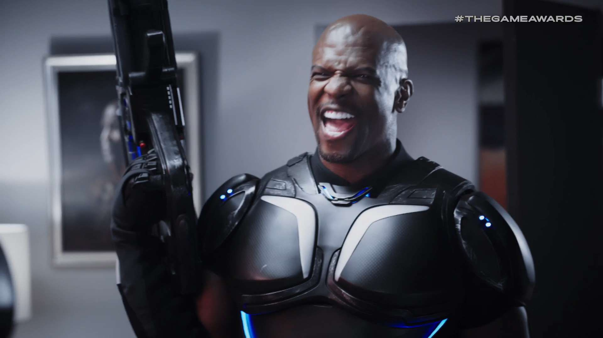

En los últimos meses, los rumores sobre un nuevo proyecto por parte de alguno de los integrantes de Xbox Game Studios no han hecho más que crecer. Concretamente, uno de los rumores aseguraba que uno de los estudios que conforman el conglomerado ha estado trabajando en un juego sin anunciar por más de tres años. Según la información encontrada en Twitter y la recopilada por los compañeros de tech4gamers, los directores y diseñadores de Crackdown 3 parecen estar trabajando en un nuevo juego no anunciado. Lógicamente, no hay ningún detalle sobre en que juego están trabajando , pero atendiendo a los detalles lo más probable es que Crackdown 4 podría estar en desarrollo.
Según la investigación realizada por el medio, hasta 3 antiguos integrantes del equipo que se encargó de desarrollar Crackdown 3 están trabajando en este nuevo proyecto. James Gorddard, Director de diseño de Ryse y Crackdown 3; Mark Simon, Director de diseño de Recore y Crackdown 3; y Dave McCrate, Productor Senior de Killer Instinct y Crackdown 3 son los desarrolladores que están trabajando en este nuevo proyecto de Xbox Game Studios. Viendo el currículum de los 3 desarrolladores, es importante destacar que todos ellos coincidieron en el desarrollo de la tercera entrega de la saga Crackdown, por lo que es más que probable que Crackdown 4 podría estar en desarrollo, teniendo en cuenta que parte del equipo que trabajó en el último título de la saga ha vuelto a reunirse en un nuevo proyecto.